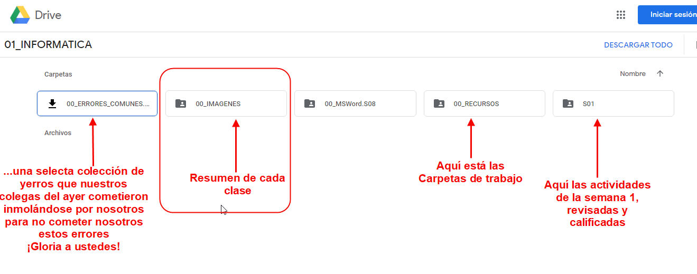
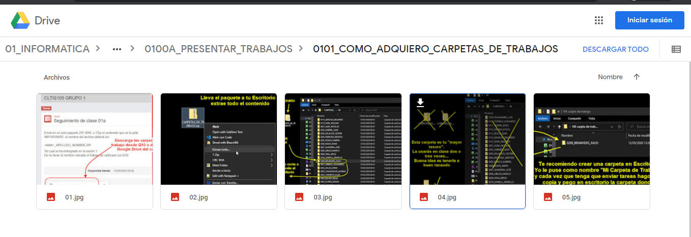

0101. Repasa lo fundamental
La carpeta 00_IMAGENES
En particular en este curso-taller te recomendamos
- Primero acceder al Google drive del curso a la carpeta 00_IMAGENES, ahí tendrás en imágenes enumeradas los pasos de cada procedimiento:

Por ejemplo si quiero repasar los pasos de cómo descargar la Carpeta_de_trabajo.ZIP la encontraré aquí (Es muy buena idea descargar las imágenes, llevarlas en el teléfono e ir viéndolas de vez en cuando)
Las imágenes consumen menos espacio que los vídeos y son más puntuales, ¡van al grano!

La página Web de la Unidad Pedagógica
Esta misma página web es un repositorio donde encontrarás en detalle lo fundamental de cada sesión. En muchos de los cursos encontrarás hojas similares.
A veces encontrarás fragmentos de estas páginas dentro del mismo Q10 dentro del recurso denominado CONTENIDO.
Algunas cosas que te esperan...
Si quieres saber algunas de las herramientas que el Instituto ha creado para asegurar tu formación aquí demostraremos algunas:
El siguiente ejemplo es para practicar un poco la conversión de números decimal a hexadecimal que se utiliza mucho en la programación de controladores MIDI, a continuación verás cómo un docente utiliza fragmentos de un vídeo para que practiques la identificación de las secciones de una composición, finalmente podrás ver un fragmento de sintetizador que puedes tocar con las teclas QWERTY del computador, teclado MIDI, el mouse... (no olvides primero poner <Start Engine> para que inicie -En Safari por restricciones de seguridad es probable que no funcione pero está probado en Chrome, Brave, Edge, FireFox:
Obra publicada con Licencia Creative Commons Reconocimiento Compartir igual 4.0